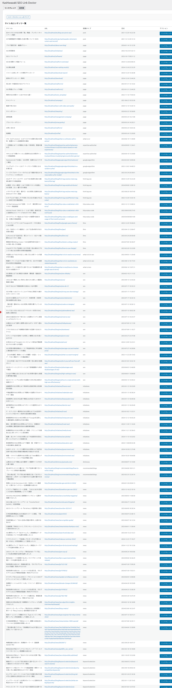

リンクチェック
サイト全ページのアウトバウンドリンクをスキャンし、HTTPステータスをリアルタイムで検証します。結果はCSVでエクスポートできます。
リンクチェックの実行

1
管理画面左メニュー「Kashiwazaki SEO Link Doctor」をクリック
2
ページ一覧からチェック対象のページを選択、または全ページを対象にスキャンを開始
3
リンクチェックがリアルタイムで実行され、各リンクのHTTPステータスコードが表示される
4
チェック完了後、ページごとのリンク健全性がビジュアルに表示される
リンクチェックはcURLを使用してHTTPステータスを取得します。サーバーの処理能力に応じて、大量のリンクがある場合は時間がかかることがあります。
HTTPステータスコード
| ステータスコード | 意味 |
|---|---|
| 200 | 正常 - リンク先が正しく応答 |
| 301 | 恒久的リダイレクト - リンク先URLの更新を推奨 |
| 302 | 一時的リダイレクト - 通常は問題なし |
| 403 | アクセス禁止 - リンク先がアクセスを拒否 |
| 404 | ページ未検出 - リンク切れの可能性が高い |
| 500 | サーバーエラー - リンク先サーバーの問題 |
| タイムアウト | 応答なし - リンク先サーバーが応答しない |
リンク健全性の可視化
ページごとにリンクの健全性をビジュアル表示します。正常なリンク・リダイレクト・エラーの割合を一目で把握できます。
CSVエクスポート
1
リンクチェックを実行して結果を表示する
2
「CSVエクスポート」ボタンをクリック
3
リンクURL、ステータスコード、ソースページ等の情報がCSVファイルとしてダウンロードされる
CSVファイルにはリンクURL、HTTPステータスコード、リンク元ページのタイトルとURL、チェック日時が含まれます。外部ツールでの分析や定期的なリンク監査に活用できます。